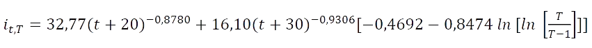

IDF de São Paulo (Governo do Estado de São Paulo, 2018).
A chuva de projeto tem duração de 2 horas e foi discretizada em intervalos de 10 minutos. A discretização temporal foi realizada pelo método de Huff (1967). Para as chuvas de projeto na cidade de São Paulo, conforme recomendação de São Paulo (Prefeitura Municipal de São Paulo, 2012)
| Tempo (min) | Chuva (mm) |
|---|---|
| 10 | |
| 20 | |
| 30 | 40 |
| 50 | |
| 60 | |
| 70 | |
| 80 | |
| 90 | 100 |
| 110 | |
| 120 |